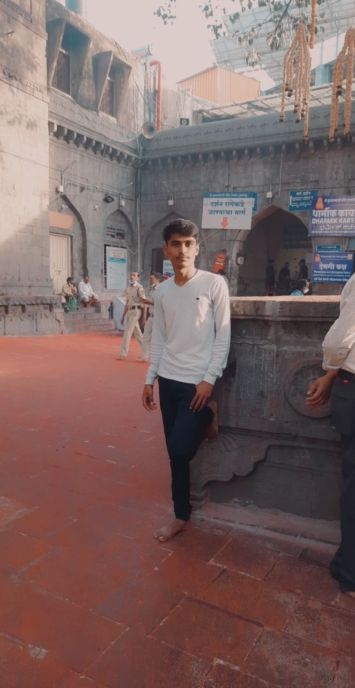

Ganesh Dhumal :
About Me :

Helllooo 👋 !
I am Ganesh Dhumal, a Second Year Engineering IT student,
pursuing my degree from the International Institute of Information Technology, Pune.
Growing up and moving up with the experiencing various technologies I was fascinated from such things
amazing things due to such experience I am very fascinated to learn new things related with technologies .
I moved to Pune, the Oxford of the East to complete my Bachelor’s in Information Technology. I started learning
Python in my first year and this has given me a chance to explore domains like AI/ML, Data Science and also
have experience in C, C++, HTML, CSS languages.Currently I am working on the Full- stack developer and I am
highly interested in the know how the machine react on the my given command
I’m looking forward to getting into web development and also experiencing the domains of Artificial Intelligence and Machine learning .